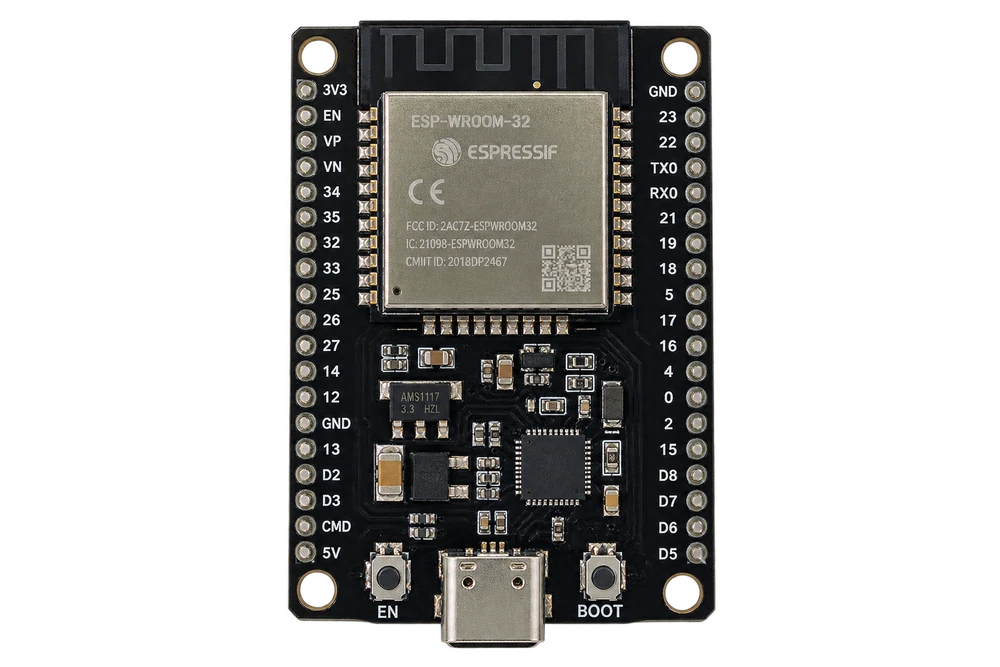
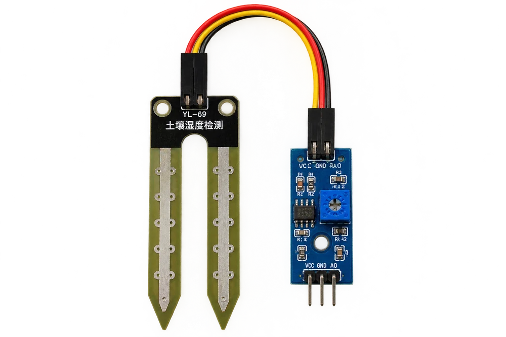
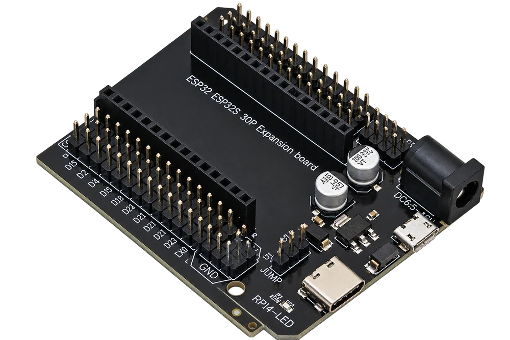
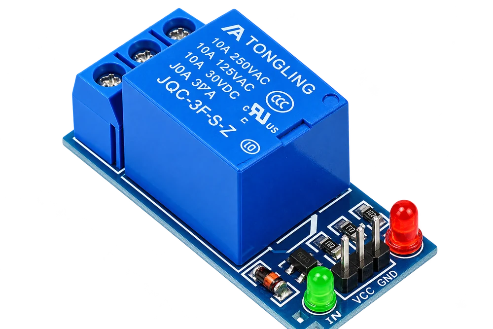
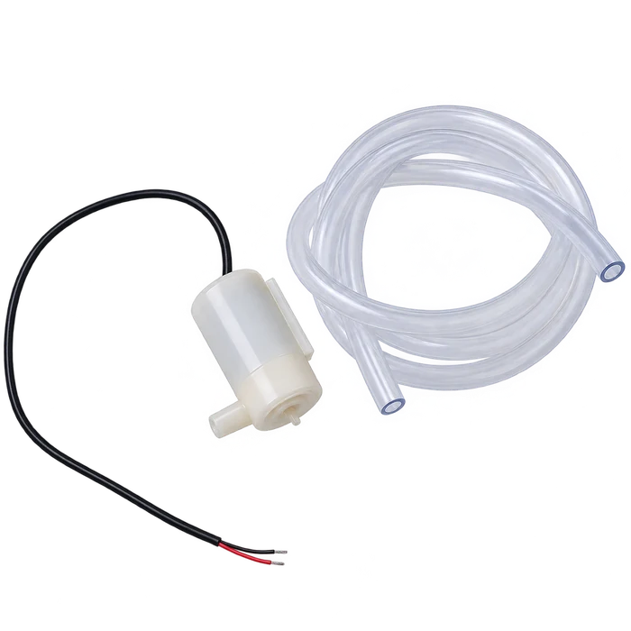
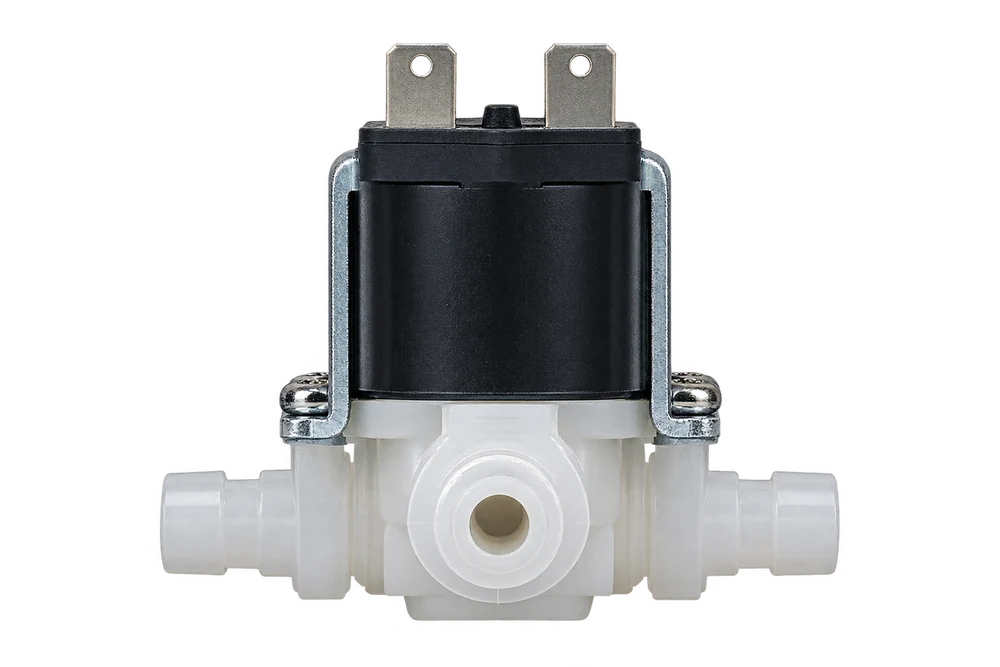

PENGENDALI
ESP32 Development Board
Membaca keluaran sensor dan menjalankan logika kendali sebelum data dikirim ke sistem pemantauan.
TEKNOLOGI DIHUTAN · KALIMANTAN BARAT
Kenali perangkat yang bekerja di lapangan, data yang dikirim ke tim pemantau, dan bagaimana sistem membantu menjaga gambut tetap basah sebelum api muncul.
PERANGKAT LAPANGAN
Ini foto perangkat yang disiapkan untuk membaca kondisi lapangan, mengolah sinyal sensor, dan mengendalikan aliran air.

PENGENDALI
Membaca keluaran sensor dan menjalankan logika kendali sebelum data dikirim ke sistem pemantauan.

SENSOR TANAH
Mendeteksi perubahan kadar air tanah melalui probe, sebagai salah satu indikator kondisi lahan yang mulai mengering.

PENGEMBANGAN
Memudahkan pemasangan ESP32 dan koneksi ke modul lain saat merakit atau menguji sistem sensor.

SAKLAR ELEKTRONIK
Menghubungkan sinyal kendali dari mikrokontroler untuk menyalakan atau mematikan beban, seperti pompa.

AKTUATOR AIR
Mendorong air melalui selang untuk membantu proses pembasahan pada prototipe atau titik yang dilayani.

KENDALI ALIRAN
Membuka atau menutup aliran air saat menerima kendali elektrik, sehingga distribusi air dapat diatur otomatis.
01 / TELEMETRI
IoT menghubungkan sensor di lapangan dengan aplikasi pemantauan. Petugas dapat melihat kondisi lokasi tanpa harus selalu datang ke setiap titik.
02 / KECERDASAN
AI Forest Guardian mengolah data telemetri dan informasi kondisi lingkungan untuk membantu mengenali pola yang tidak biasa. AI adalah lapisan analisis—bukan sensor fisik—yang membantu tim menentukan area yang perlu diperiksa.
03 / OTOMASI
AutoSpray adalah sistem pembasahan otomatis yang menghubungkan pembacaan kondisi air dengan pompa dan sprinkler. Saat batas kering yang ditentukan tercapai, sistem dapat membantu memulai pembasahan tanpa menunggu pemeriksaan manual di lokasi.
SATU SISTEM, BANYAK LAPISAN
Sensor membantu membaca kondisi, jaringan mengirim informasi, dan petugas maupun sistem otomasi menindaklanjuti data.
TMA, suhu, dan kelembapan dipantau di titik lapangan.
ESP32 meneruskan pembacaan melalui konektivitas yang tersedia.
Dashboard dan analisis membantu petugas melihat perubahan.
Petugas memverifikasi dan AutoSpray dapat membantu pembasahan.